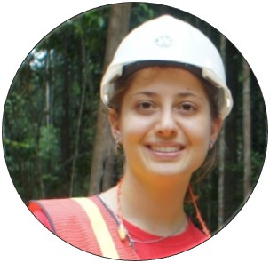

Biography
Areas of Interest
- - Quantitative forest ecology
- - Geography Information System
- - Statistical Methods
- - Remote Sensing
- - Open-source software development
- - Fire ecology and management
- - Disturbance
Dr. Carine Klauberg is an Assistant Research Scientist at the School of Forest, Fisheries, and Geomatics Sciences (SFFGS) at the University of Florida (UF). Her research focuses on quantitative ecology, leveraging statistical methods and artificial intelligence, together with GIS and remote sensing technologies, to improve the understanding of forest ecosystems.
Prior to joining the University of Florida, Dr. Klauberg served as an Associate Professor at the Federal University of São João Del-Rei (UFSJ) in Brazil, specializing in tropical forest management, fire ecology, and forest monitoring. She also completed a postdoctoral research fellowship in the United States at the USDA Forest Service’s Moscow Forestry Sciences Laboratory, where she worked on fire behavior, smoke, and fuels modeling projects.
Over the course of her career, Dr. Klauberg has published more than 50 peer-reviewed scientific articles. She is also the author of several open-source software tools and R packages, as well as Shiny web applications that support forest ecology research and remote sensing data analysis. Some of her notable tools include rTLSDeep, rGEDI, TreeTop, and ForestGapR.
Editorial and Review Activities
- - Guest Editor - Remote Sensing MPD
- - Review: Forest Ecology and Management, Remote Sensing, Forests, and others
Education
| Institution | Degree / Details | Year |
|---|---|---|
| University of São Paulo (Brazil) | Ph.D., Forest Resources Advisor: Edson Vidal, Ph.D. Thesis: “Production and management of two potential non-timber forest products in the Amazon context - the cipó-titica (Heteropsis spp.) and copaiba (Copaifera spp.)” |
2010 – 2014 |
| State University of Paraná (Brazil) | Specialization, Post-graduation in Forest Management Advisor: Timni Vieira, Ph.D. Monograph: “Caracterização do cenário dos artigos publicados sobre os produtos florestais não madeireiros, em âmbito nacional e internacional nos últimos 21 anos” |
2012 – 2014 |
| State University of Santa Catarina (Brazil) | Bachelor of Science, Forest Engineering | 2005 – 2009 |
| Federal Institute of Santa Catarina (Brazil) | Forest Technician | 2002 – 2004 |
Academic Experience & Employment
| Institution | Position / Details | Year |
|---|---|---|
| University of Florida | Research Assistant Scientist Areas of Research: Forest Ecology, Botany, Forest Management, Environmental Science, Inventory, GIS, Remote Sensing, AI, and Disturbance (Fire and Hurricanes) |
2022 – present |
| Federal University of São João Del-Rei – UFSJ | Associate Professor Specialization: Tropical Forest Management, Forest Ecology, Fire Science, GIS, Remote Sensing |
2018 – 2022 |
| USDA Forest Service - Moscow Forestry Sciences Laboratory (USA) | Postdoctoral Research Fellow Advisor: Andrew T. Hudak, Ph.D. Project: RxCADRE – Fuels, fire behavior, smoke, and fire effects model development and evaluation |
Aug. 2015 – Aug. 2018 |
| Universidad Politécnica de Madrid – UPM (Spain) | Graduate Research Fellow Advisor: Luis Diaz Balteiro, Ph.D. Forest management and economics of non-timber forest products |
Sep. 2012 – Nov. 2012 |
| Instituto Nacional de Investigación Agropecuaria – INIA (Uruguay) | Undergraduate Research Fellow Advisor: Cecilia Rachid, Ph.D. Site index classification in forest plantations |
Sep. 2009 – Dec. 2009 |
| International Student Exchange Program - Universidad de la República (Uruguay) | Forest Engineering Undergraduate Management of parks and watersheds class |
Aug. 2009 – Nov. 2009 |
| Associação de Preservação do Meio Ambiente do Alto Vale do Itajaí – APREMAVI (Brazil) | Field Surveyor Floristic and phytosociological vegetation characterization in Atalanta-SC |
Jan. 2009 – Feb. 2009 |
| The Department for Environment of the Municipality of Lages (Brazil) | Intern, Environmental Inspection Sector | Aug. 2008 – Dec. 2008 |